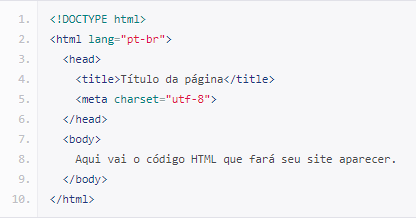

O primeiro passo para iniciar a desenvolver páginas HTML, seria instalando um ambiente de desenvolvimento. A plataforma que utilizamos no curso foi Visual Studio Code, que possui muitas ferramentas e extensões que ajudam no aprendizado. Além disso, necessário possuir instalado um navegador para realizar testes.
O Inspetor de Elementos é utilizado para inspecionar páginas e sites da web e visualizar tudo o que está por trás da página. Além de mostrar os arquivos, apresenta também os códigos envolvidos da página. Para isso, bastar ir nas configurações do navegador e procurar por inspecionar ou utilizar o atalho Ctrl+Shift+I.
Nesse tópico foi estudado a estrutura padrão do html, que é apresentado na imagem abaixo. Lembrando que existe muitos conteúdos na web para explorar sobre o html, como a:
Mozilla developer.

As tags são usadas para informar ao navegador a estrutura do site. Ou seja: quando se escreve um código em HTML, as tags serão interpretadas pelo navegador, produzindo assim a estrutura e o conteúdo visual da página. A principal característica das tags é estarem sempre dentro dos sinais de maior que e menor que, sendo que para finallização da tag seria barra + menos que.
Os atributos são usados para personalizar as tags, modificando sua estrutura ou funcionalidade. Igualmente, os atributos são utilizados para atribuir uma classe ou id a um elemento. A maioria das tags tem seus próprios atributos. Contudo, existem alguns atributos genéricos que podem ser utilizados na maioria das tags html, exemplo de tag sup: tags HTML.
Os textos são estruturados de acordo com a tag utilizada. No html existe a tag p, que significa que irá iniciar e finalizar um parágrafo. Além disso, existe a tag strong que define a palavra como negrito, e a tag i que define o texto como itálico.
As listas servem para separar textos por itens, sendo ordenadas ou não ordenadas. As listas ordenadas seguem uma ordem numérica e as listas não ordendas não seguem ordem, utilizam o mesmo delimitador.
Os links servem para direcionar um texto para uma página da internet.